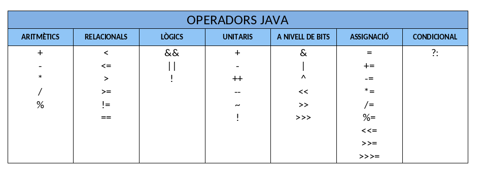
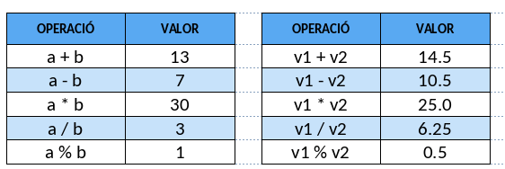
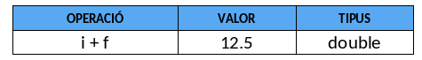
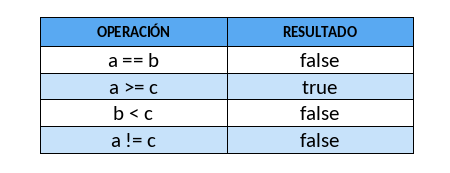
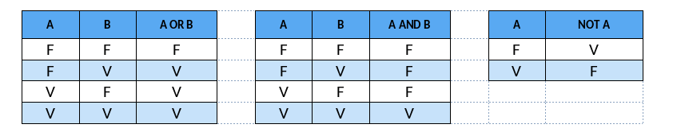
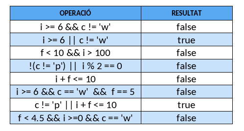
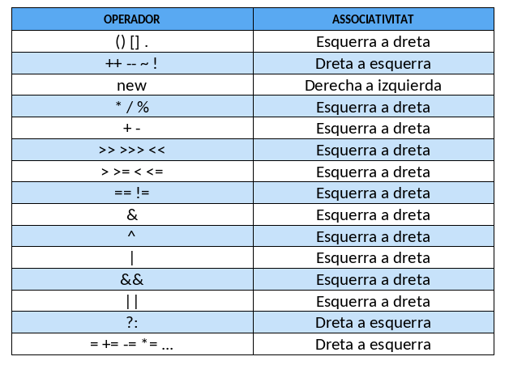

Operadors en Java
La següent taula mostra tots els operadors del llenguatge Java:

A continuació, es detallen només els principals operadors dels anteriorment exposats.
Operadores Java aritméticos.
Els operadors aritmètics en Java són:
-
- Suma. Los operandos pueden ser enteros o reales
-
- Resta. Los operandos pueden ser enteros o reales
-
- Multiplicación. Los operandos pueden ser enteros o reales
- / Divisió. Los operandos pueden ser enteros o reales. Si ambos son enteros el resultado es entero. En cualquier otro caso el resultado es real.
- % Reste de la divisió. Los operandos pueden ser de tipo entero o real.
Exemple d'operacions aritmètiques Suposem que tenim les següents variables:
En la taula es mostren distintes operacions aritmètiques que podem fer amb aquestes:

Com ja s'ha comentat abans, Java és un llenguatge fortament tipat. Per això és important saber de quin tipus és el resultat d'una operació aritmètica si hi intervenen dades de tipus diferents.
En aquelles operacions en què apareixen operands de distint tipus, Java convertix els valors al tipus de dada de major precisió de totes les dades que hi intervenen, i este serà el tipus del resultat. Esta conversió es realitza de manera temporal, només per a fer l'operació. Els tipus de dades originals romanen igual després de l'operació. És molt important tindre-ho en compte per a poder assignar el resultat de l'operació a una variable del mateix tipus.
Pel que fa a la conversió temporal de tipus, els tipus short, byte i char es convertixen automàticament a int. Per exemple, donades les següents variables:
int i = 7;
double f = 5.5;
byte b = 1;
double a;
a = 5 / 2; // Es perd la part decimal en l'operació. a contindrà el valor de 2.0
a = 5.0 / 2; // No es perd la part decimal en l'operació. a contindrà el valor de 2.5

Nota
Compte a utilitzar l'operand de divisió amb números enters, ja que el resultat obtingut serà també de tipus enter (obviant els possibles decimals). Per això es recomana utilitzar un número real, almenys en 1 dels 2 operands.
Operadors Java relacionals.
Els operadors relacionals comparen dos operands i donen com a resultat de la comparació verdader o fals. Els operadors relacionals en Java són:
- < Menor que
- > Major que
- <= Menor o igual
- >= Major o igual
- != Distint
- == Igual
Els operands han de ser de tipus primitiu. Per exemple:

Operadors Java lògics.
Els operadors lògics s'utilitzen amb operands de tipus boolean. S'utilitzen per a construir expressions lògiques, el resultat de les quals és de tipus true o false.
Els operadors lògics en Java són:
- && AND. El resultat és verdader si els dos operands són verdaders. El resultat és fals en cas contrari. Si el primer operand és fals no s'avalua el segon, ja que el resultat serà fals.
- || OR. El resultat és fals si els dos operands són falsos. Si un és verdader el resultat és verdader. Si el primer operand és verdader no s'avalua el segon.
- ! NOT. S'aplica sobre un sol operand. Canvia el valor de l'operand de verdader a fals i a l'inrevés.
Les definicions de les operacions OR, AND i NOT s'arrepleguen en unes taules conegudes com a taules de veritat.

F : Fals V : VertaderCom exemple, en la següent taula veiem una sèrie d'expressions lògiques i el seu valor:

Les expressions lògiques en Java s'avaluen només fins que s'ha establit el valor cert o fals del conjunt. Quan, per exemple, una expressió serà segur falsa pel valor que ha pres un dels seus operands, no s'avalua la resta de l'expressió.
Operadors Java unitaris.
Els operadors unitaris en Java són:
-
– + signes negatiu i positiu
-
++ -- increment i decrement
-
! NOT. Negació
Estos operadors afecten un sol operand.
L'operador ++ (operador increment) incrementa en 1 el valor de la variable. Exemple d'operador increment:
int i = 1;
i++; // Esta instrucció incrementa en 1 la variable i.
// És el mateix que fer i = i + 1; i pren el valor 2
int i = 1;
i--; // decrementa en 1 la variable i.
// És el mateix que fer i = i - 1; i pren el valor 0
Operadors Java d'assignació.
S'utilitzen per a assignar el valor d'una expressió a una variable. Els operands han de ser de tipus primitiu.
Important: Si els dos operands d'una expressió d'assignació (el de l'esquerra i el de la dreta) són de distint tipus de dades és possible que l'assignació no es puga realitzar. El valor de l'expressió de la dreta s'assignarà a la variable que apareix a l'esquerra de l'operador d'assignació sempre que siguen del mateix tipus o de tipus compatibles.
Per exemple:
En intentar realitzar la instrucció n = m + 1; es produirà un error. El resultat de l'operació aritmètica m + 1 és de tipus double i no es pot assignar a una variable de tipus int.
En este altre cas l'assignació sí que és possible:
El resultat de l'operació aritmètica n + 50 és de tipus int i m és de tipus double. Encara que ambdós tipus no coincidixen, l'assignació es pot realitzar perquè el rang de valors d'un int és menor que el d'un double i per tant no hi pot haver pèrdua d'informació.
En general, en una assignació del tipus A = B, si el rang de valors que pot emmagatzemar A és major que el rang de valors que pot emmagatzemar B aleshores l'assignació es podrà realitzar. Per exemple, si A és de tipus double i B de tipus float l'assignació A = B es pot fer, però no es podrà realitzar en cas contrari (sent A float i B double).
De vegades ens pot interessar emmagatzemar dades en variables, tot i sabent que hi haurà pèrdua d'informació. Un exemple clàssic és emmagatzemar un número de tipus real (per exemple 4,7) en una variable de tipus enter (emmagatzemant 4 i perdent, per tant, la part decimal).
Seguint les normes descrites anteriorment, açò no es podria realitzar, ja que el tipus de dades real és major que el tipus de dades enteres. En estos casos es pot fer una conversió explícita de dades utilitzant el mecanisme anomenat càsting de tipus (casting).
Per últim, cal indicar que en Java estan permeses les assignacions múltiples. Per exemple:
L'assignació de valor a les variables en una assignació múltiple es realitza de dreta a esquerra. En l'exemple, primer s'assigna el valor 3 a c, a continuació, el valor de c s'assigna a b i finalment el valor de b se li assigna a la variable a.
Prioritat i ordre d'avaluació dels operadors en Java.
La següent taula mostra tots els operadors Java ordenats de major a menor prioritat. La primera fila de la taula conté els operadors de major prioritat i l'última els de menor prioritat. Els operadors que apareixen en la mateixa fila tenen la mateixa prioritat. Una expressió entre parèntesis sempre s'avalua primer i si estan niats s'avaluen dels més interns als més externs.

El següent exemple té en compte la prioritat i l'ordre d'avaluació d'operadors:
int a, b, c;
a = 4 * 5 / 3 + 6; // el resultat serà 12
// Trenquem l'orde establit per la prioritat d'operadors.
b = 4 * 5 / (3 + 6); // el resultat serà 2.
// Trenquem l'orde establit per l'associativitat d'esquerra a dreta
// per a la mateixa prioritat d'operadors.
c = 4 * (5 / 3) + 6; // el resultat serà 10.